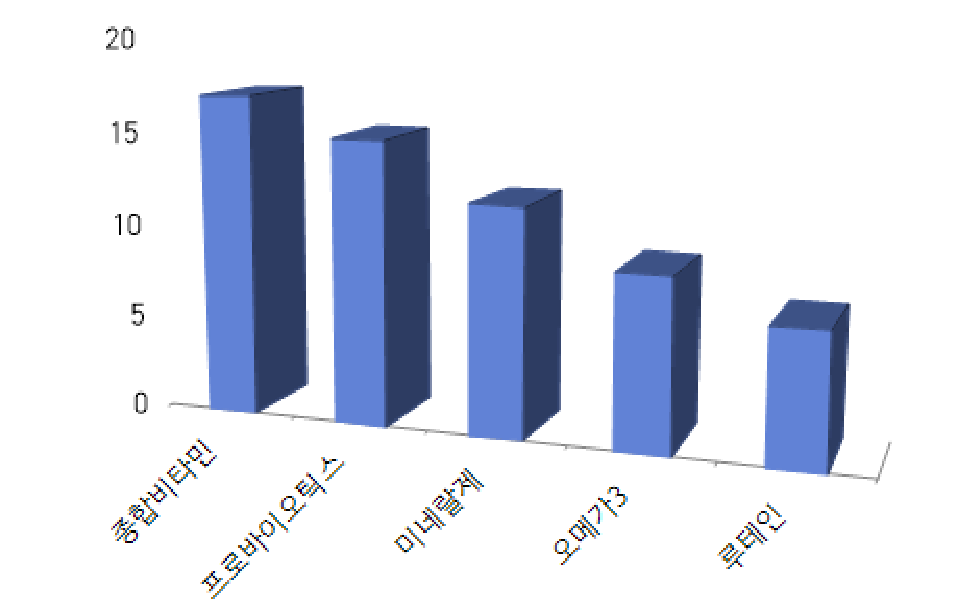

무너지는 영양소
갑자기 비타민?
비타민은 생명에 필수적인 요소입니다. 인간의 성장, 활력, 건강을 유지하기 위해 없어서는 안 되는 필수 물질인데요.
비타민은 인체에서 자체적으로 합성되지 않기 때문에 매일 식사를 통해 공급받아야만 결핍증을 피할 수 있습니다.
그래서 식사를 골고루 잘하는 분이라면 굳이 영양제의 도움을 받을 필요가 없습니다. 하지만 바쁜 현대사회를 살아가는 우리들은 영양소를 고르게 섭취하기 힘든 게 현실이에요.
더 자세히 말해줄래?
비타민A,B,C,D...오메가3, 프로바이오틱스 등 수많은 영양제가 있는데 찾아보기는 귀찮고, 막상 찾아봐도 다 필요하게 느껴지는 사람을 위해 준비했어요.
또한 각 비타민의 효능에서 끝내지 않고 미백, 노화 방지 등 기능성 비타민에 대해서도 알려줄 거에요.
건강 전문가들이 가장 많이 복용하는 영양제 Top5

1. 종합비타민 17명
음식만으로는 하루에 필요한 영양을 고루 섭취하기 어렵습니다. 특히 바쁜 일상 속에서 과일과 채소를 통해 영양소 균형을 맞추기는 쉽지 않은데요.
이를 보완하기 위해 종합비타민을 섭취하는 분들이 늘어나고 있습니다.
종합비타민, 이래서 먹는다.
신현영(명지병원 가정의학과 교수)
“현대인의 영양 결핍을 보완할 수 있는 최소한의 보조제라 생각.”
강연하(이대목동병원 영양과 영양사)
“불규칙한 식사, 다이어트 등을 할 경우 필요한 비타민, 미네랄을 식사로 다 먹지 못하는 경우가 많다. 이 때문에 다양한 비타민과 미네랄을 한 번에 보충할 수 있는 종합비타민을 먹는다.”
주진희(경희의료원 영양팀 영양사)
“최근 신선한 과일 및 채소의 섭취가 충분치 못하여 종합비타민을 섭취하고 있다.”
2. 프로바이오틱스 15명
프로바이오틱스는 장 안에서 몸에 좋은 작용을 하는 유익균들입니다.
장에 도달하면, 장내 환경에 유익한 작용을 하는 균주를 형성하면서, 장 속에 쌓인 유해균이나 노폐물은 배출하는 작용을 하는데요.
장 건강 이외에 식약처가 인정한 기능성에는 면역과민반응에 의한 피부 상태 개선·코 상태 개선에 도움, 갱년기 여성 건강에 도움, 질내 유익균 증식 및 유해균 억제에 도움, 체지방 감소에 도움을 줍니다.
하지만 프로바이오틱스를 과다 복용하면 설사, 복통을 유발할 수 있고, 암환자같은 면역력이 많이 떨어진 사람은 복용하면 안됩니다.
프로바이오틱스, 이래서 먹는다.
김혜진(행복한 약국 약사)
“프로바이오틱스를 7년째 복용하고 있다. 유산균은 장내 환경을 좋게 해 장 건강과 배변활동을 원활하게 한다. 게다가 장 속에는 몸속 면역세포의 70% 정도가 집중돼 있기 때문에 장 건강이 좋아지면, 면역력도 높아지는 효과를 볼 수 있다. 실제로 프로바이오틱스 복용 후 잔병치레를 하는 경우가 적어졌다.”
이선영(상계백병원 가정의학과 교수)
“프로바이오틱스는 스트레스나 식습관 문제로 생기기 쉬운 과민성대장증후군 증상 개선에 도움이 돼 섭취하고 있다.”
3. 미네랄제(마그네슘, 아연, 칼슘제 등) 12명
성별에 따라 선호하는 영양제
여성
1. 프로바이오틱스
2. 종합비타민
다이어트 등으로 인한 배변 활동 문제가 잦아 배변 활동 개선에 도움이 되는 프로바이오틱스 복용이 많았던 것으로 추정
국내 10~50대 여성 76%가 겪는 질염 완화에도 도움이 된다. 질염은 여성 생식기 질환 중 가장 흔한 질병으로 꼽히는데, 유해균이 질에 번식하게 되면서 생긴다.
이때 질에 작용하는 유산균을 섭취하면, 유해균 억제 효과를 볼 수 있다.
남성
1. 종합비타민
남자들의 귀찮음때문인지 종합비타민이 압도적 1등으로 나오고 그 외 비타민들의 선호도에는 차이가 없습니다.
필수적인 비타민부터 나열
꼭 먹어야하는 비타민
비타민c : 날씨가 추워서 면역력이 낮아지는 겨울에 특히 더 잘 챙겨 먹어야 한다. 비타민 C는 항산화 작용을 하므로 감기와 독감을 예방하는 데 도움이 된다.
비타민a: 몸에 비타민 A가 부족해지면 시력에 문제가 생길 수 있다. 비타민 A를 “눈에 좋다”라고 이야기하는 이유가 여기에 있다. 또 이 물질은 항산화제로 면역계를 좋은 상태로 유지해주는 효과가 있다.
비타민B 1,2: 비타민 B12는 건강한 신경 및 혈액 세포에 필요한 영양분이다.
비타민d: 뼈 건강과 칼슘 흡수에 꼭 필요한 비타민이다. 비타민 D 수치가 낮아지면 심장 질환과 암에 걸릴 위험이 커진다. 이 비타민은 햇볕에서 얻을 수 있다.
비타민 B6는 우리 몸에서 약 200가지 생화학 반응을 하는 비타민이다. 따라서 충분하게 챙겨 먹어야 한다. 비타민 B6는 다음과 관련되어 있다.
수면, 식욕, 기분인지, 능력면역계, 적혈구 생산
비타민d
오메가3
칼슘 복합체제: 칼슘은 지방과 함께 몸 밖으로 나가는 효과가 있어요. 이미 잘 먹고 있는데 더 먹는 건 효과가 없고요. 부족할 때 드시면 좋아요.
그런데 우리나라 여성들에게 가장 부족한 영양소가 칼슘이거든요.
프로바이오틱스(유산균)
비타민c